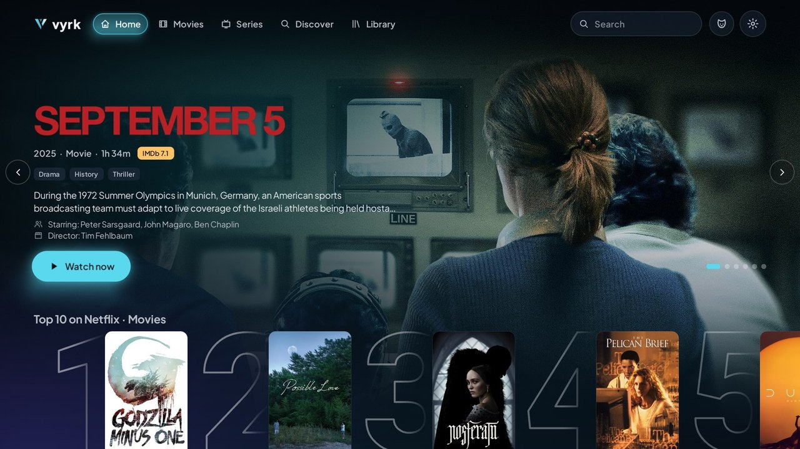
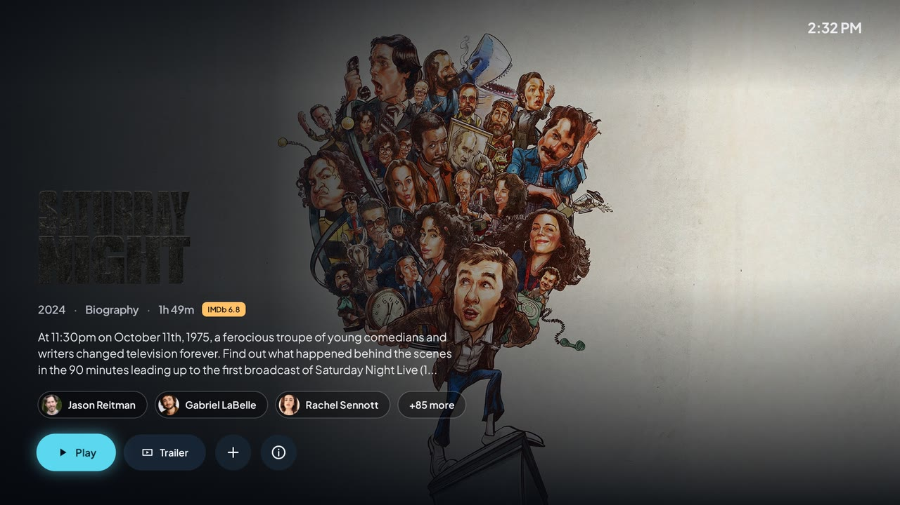
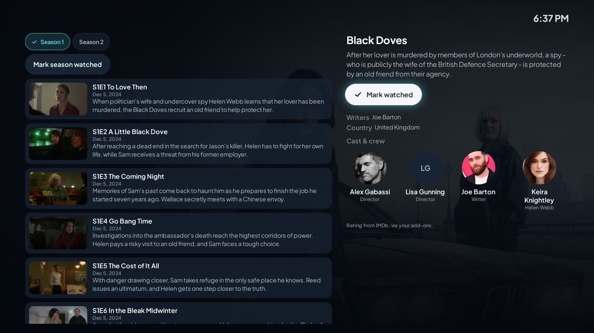
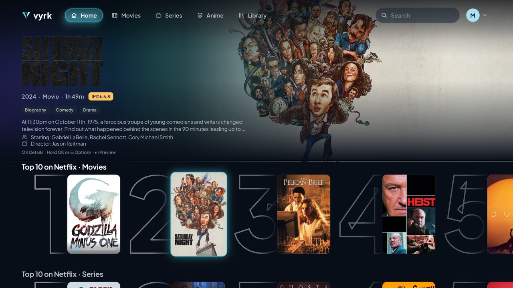
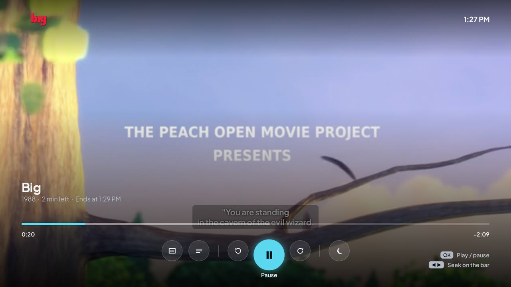
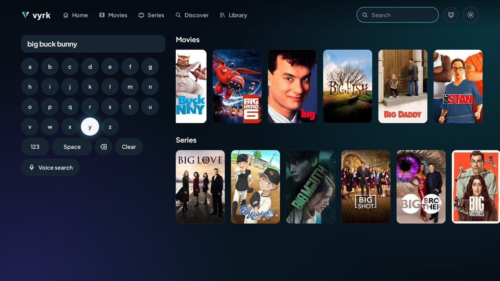
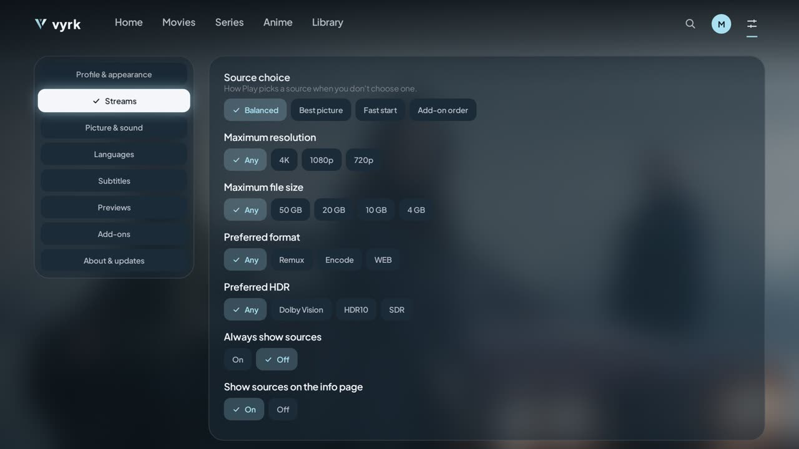

Made for the remote
Every screen works with the D-pad, OK and Back. Focus is a soft glow with a slight zoom, never lost, and it comes back to the poster you left.
Android TV · Free and open source
Forged for Streaming
A free, open-source Android TV app for Stremio add-ons. Sign in with Stremio or use it without an account, browse your catalogues and press Play. Everything with the remote.
Latest release on GitHub · works on any Android TV
No ads, analytics or tracking. VYRK hosts no media and isn't affiliated with Stremio.

Every screen is designed for a remote and a TV across the room, not a mouse.
Every screen works with the D-pad, OK and Back. Focus is a soft glow with a slight zoom, never lost, and it comes back to the poster you left.
A featured title with its own artwork and logo, Continue Watching, Top 10 rows per streaming service and your catalogue rows, with an optional muted trailer.
Logo, facts, synopsis and cast with photos over the title's artwork. One more press shows the episodes, or every source ranked and explained.
Play starts the best source for your TV. Broken links are refreshed or skipped. Skip intro and recap, chapters on the timeline, Up Next and sleep timers.
Sign in by QR code to bring your add-ons and library, or start without an account. Install add-ons from a link and configure them from your phone.
Scan the QR code on first run to sign in with Stremio, or use VYRK without an account. Watched state follows Stremio's own rules, so progress reads correctly in other Stremio apps.
English, Spanish, Brazilian Portuguese, French, German, Hindi and Italian, with an in-app language choice.
New versions install from Settings › About & updates, and only if they're signed with the same key as the copy you have.
Captures of the real app on an Android TV emulator with live catalogues.






Every release is on GitHub, signed and with checksums.
Not sure? Choose universal. It works everywhere, it's just bigger.
myklharu.github.io/vyrk-tv in it, choose your APK and install.adb connect <tv-ip>:5555
adb install -r vyrk-<version>-arm64-v8a.apkChoose Sign in with Stremio and scan the QR code, or Use without an account. Add stream add-ons in Settings › Add-ons. Later versions install from Settings › About & updates.
Coming from a test build (the ci-latest pre-release)? Uninstall it first: test builds are signed with a public key, so Android won't update them to a release.
No ads, analytics, tracking or VYRK account. This website has none either.
VYRK is GPL-3.0, written in Kotlin with Compose for TV and Media3. What works, and how it was checked, is written down feature by feature.